Handout
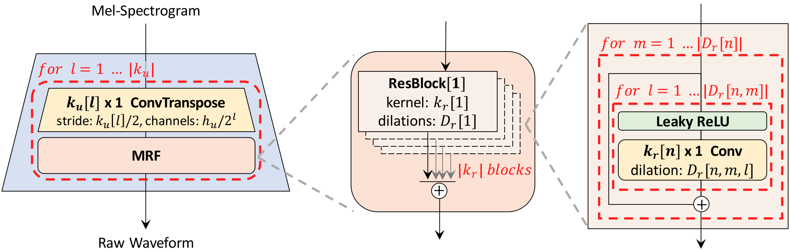
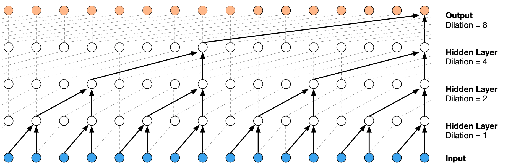
for i in range(self.num_upsamples): # 4 stages, k_u = (16, 16, 4, 4)
x = self.transposed_convs[i](leaky_relu(x)) # T *= k_u[i] // 2
xs = 0 # ---------- MRF ----------
for n in range(self.num_kernels): # k_r = (3, 7, 11) parallel branches
res = x # residual block, kernel size k_r[n]
for c1, c2 in zip(self.convs1[i][n], self.convs2[i][n]): # D_r = ((1,1), (3,1), (5,1)) × 3
h = c1(leaky_relu(res)) # dilation 1, 3, 5
h = c2(leaky_relu(h)) # dilation 1
res = res + h # 2 convs in a row, then skip
xs = xs + res
x = xs / self.num_kernels # same shape as xtransposed_convs[i] changes the shapex and are shape-preserving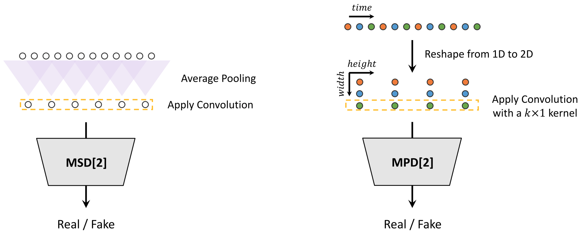
Multi-Scale Discriminator — different receptive fields: raw audio, ×2 and ×4 avg-pooled (HiFi-GAN, MelGAN)
Multi-Period Discriminator — different periods, usually primes [2, 3, 5, 7, 11], so it can analyze different periodic patterns in the audio (HiFi-GAN)
Usually all discriminators are paired with a feature matching loss:
\mathcal{L}_{FM}(G) = \mathbb{E}_{(x, s)} \left[ \frac{1}{K} \sum_{k=1}^{K} \frac{1}{T_k} \sum_{i=1}^{T_k} \frac{1}{N_{k,i}} \left\lVert D_k^i(x) - D_k^i(G(s)) \right\rVert_1 \right]
where D_k^i are the layer-i features of discriminator k and N_{k,i} their element count
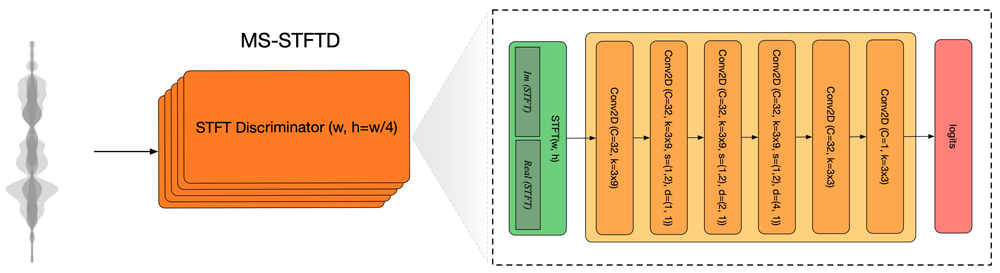
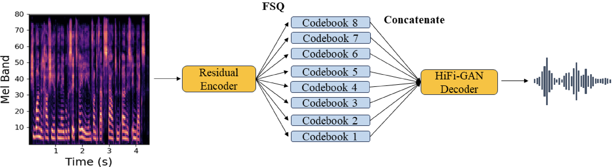
Spectral Variant
Waveform Variant
Downstream TTS
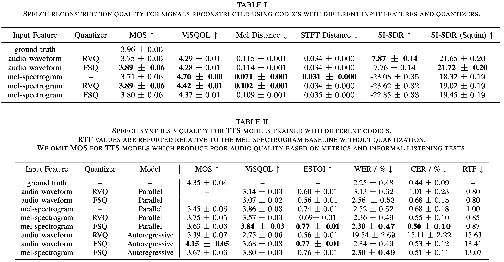
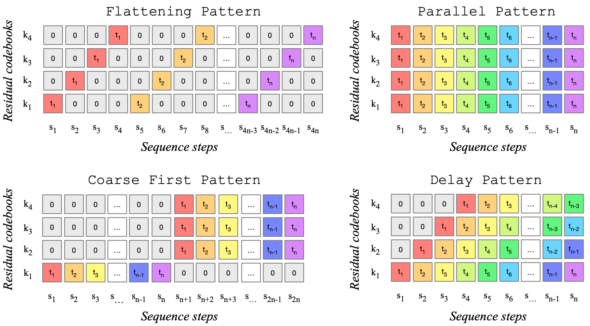
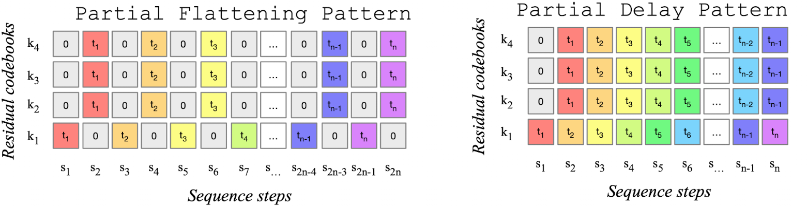
Except for the Parallel pattern, the model input at time t is not the audio representation at t-1 — it is simply the sum of the previous predictions at t-1, according to the pattern. For the Delay pattern:
X_{t+1} = \text{emb}_1\big(q_{t,\,1}\big) + \text{emb}_2\big(q_{t-1,\,2}\big) + \dots + \text{emb}_K\big(q_{t-K+1,\,K}\big)
Whether head k is active at time t also depends on the pattern — inactive heads contribute a special token instead of a prediction.
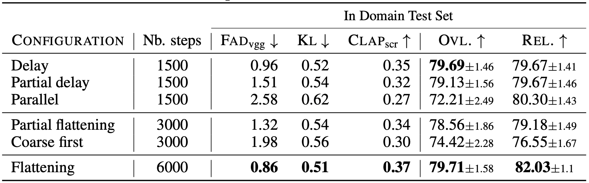
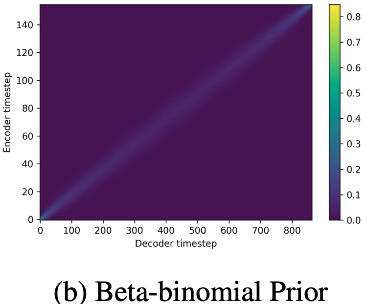
During early training, cross-attention is multiplied by a static 2D beta-binomial prior
The prior is a matrix with cigar-shaped diagonal values, given by the beta-binomial PMF:
f_B(k;\, n, \alpha, \beta) = \binom{n}{k} \frac{B(k + \alpha,\; n - k + \beta)}{B(\alpha, \beta)}
It is evaluated as P_{k,t} = f_B\big(k;\, N,\; \omega t,\; \omega (T - t + 1)\big), where \omega is a width factor, k the text token index, t the audio token index, N the text length and T the audio length
Schedule: for the first S_1 steps simply multiply cross-attention by the prior, then over the next S_2 steps anneal it towards a matrix of all ones
Observation: the CTC loss formulation allows all possible monotonic alignments to be considered
Given that the audio token sequence is longer than the text token sequence, the CTC loss can be computed on all cross-attention matrices → penalizing the model for non-monotonic attention
\mathcal{L}_{\text{align}} = \text{CTCLoss}\big(\log A,\; y\big), \qquad A \in \mathbb{R}^{T \times N}
where A is the cross-attention matrix (audio steps \times text tokens) treated as per-step emission probabilities, and y is the text transcript
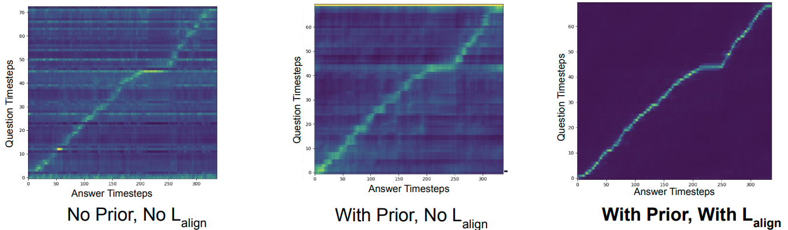
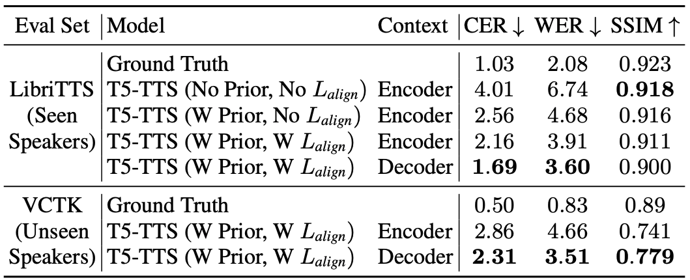
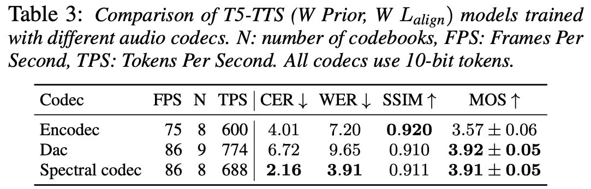
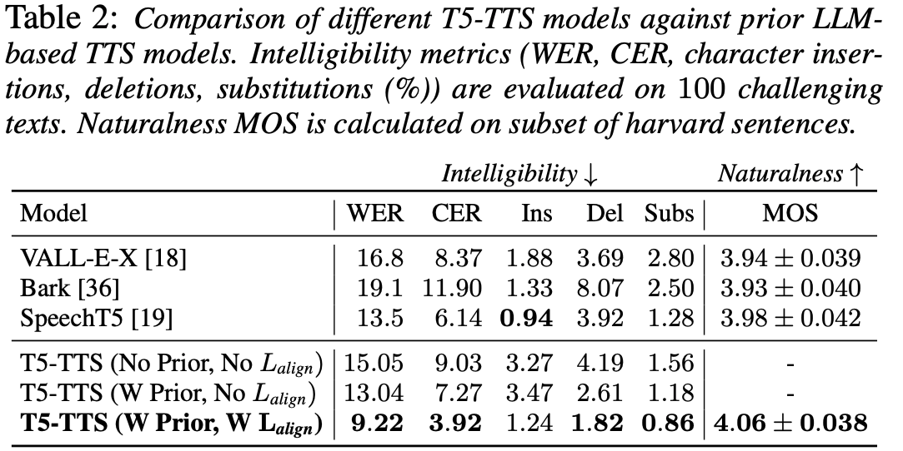
LFSC Encoder: HiFi-GAN MRF blocks with dilation rate 1, each followed by a strided 1D conv for downsampling → strides mirror the decoder’s upsampling
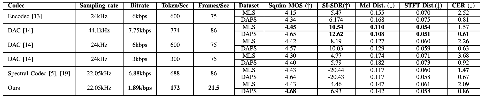
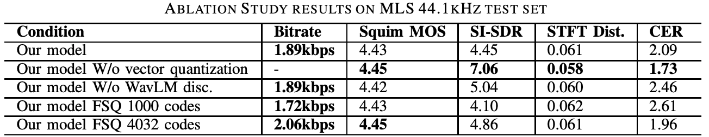
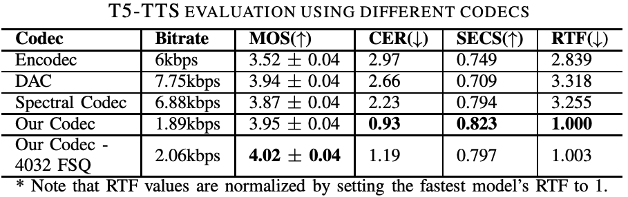
Reconstruction quality is not fully aligned with TTS quality
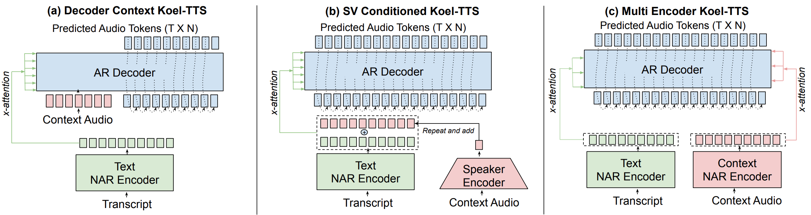
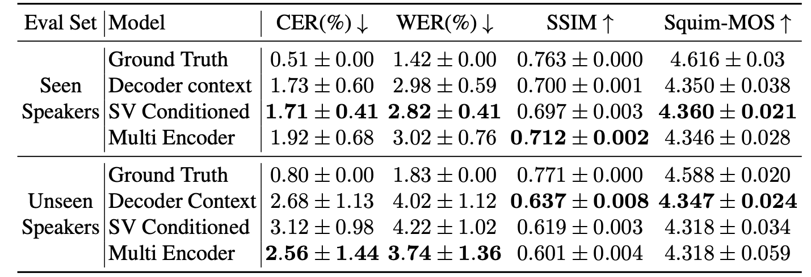
Training: randomly drop the A+T conditioning with some probability — the model learns both conditional and unconditional generation paths
Inference is autoregressive, token by token — at each step we run two forward passes:
Sample the next token from the interpolated logits:
\ell = \gamma \cdot \ell_c + (1 - \gamma) \cdot \ell_u
where \gamma is the guidance scale; \gamma > 1 amplifies the conditioning signal
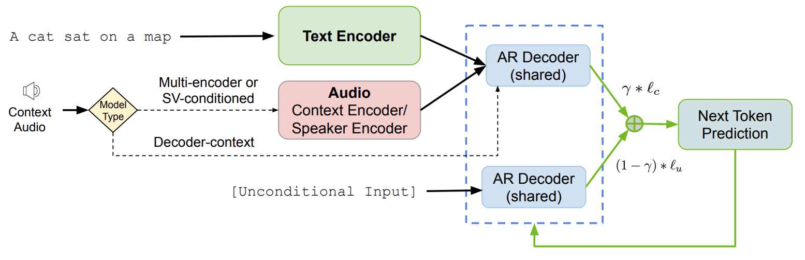
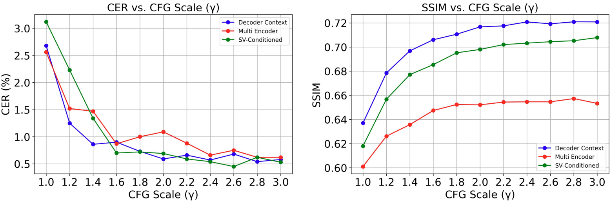
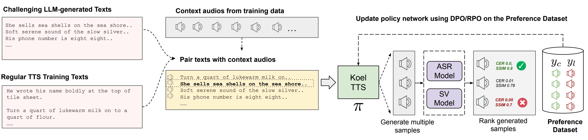
On-policy data is critical
Sample A is dominated by B if B is at least as good on both metrics and not identical — i.e. no sample is strictly better on one metric and equally good or better on the other
Pareto front = all non-dominated samples → assign them the current rank, remove them, repeat on the remainder → next front, and so on until every sample is ranked
Within a front, prioritize lower CER, breaking remaining ties by higher SSIM
RPO: pair the top two with the bottom two in all combinations (4 pairs), since it handles scalar reward differences instead of a binary preference
In both cases, discard pairs where the chosen sample scores worse on any metric
Given input x (text + context audio), the top-ranked sample as chosen y_c and the bottom-ranked as rejected y_l — high-contrast pairs are empirically beneficial:
\mathcal{L}_{\text{DPO}} = -\mathbb{E}_{x,\,y_c,\,y_l} \log\sigma\!\left(\beta \left[\log\frac{\pi_\theta(y_c \mid x)}{\pi_{\text{ref}}(y_c \mid x)} - \log\frac{\pi_\theta(y_l \mid x)}{\pi_{\text{ref}}(y_l \mid x)}\right]\right) = -\mathbb{E}_{x,\,y_c,\,y_l} \log\sigma\!\big(\beta\,\Delta(x, y_c, y_l)\big)
Here \Delta is the log-likelihood ratio gap between chosen and rejected:
\Delta(x, y_c, y_l) = \big[\log \pi_\theta(y_c \mid x) - \log \pi_{\text{ref}}(y_c \mid x)\big] - \big[\log \pi_\theta(y_l \mid x) - \log \pi_{\text{ref}}(y_l \mid x)\big]
Each \log \pi(y \mid x) is a single scalar — one teacher-forced pass, all logits summed (over codebooks within a frame)
4 such scalars per pair — \{\pi_\theta, \pi_{\text{ref}}\} \times \{y_c, y_l\} — and \pi_{\text{ref}} is frozen (the base checkpoint), so its two can be precomputed; gradients flow only through \pi_\theta
\beta controls how far \pi_\theta can deviate from \pi_{\text{ref}}
DPO only knows which sample is better; RPO also knows by how much — it compares two preference scores for the same pair:
\underbrace{s_\theta = \beta\,\Delta(x, y_c, y_l)}_{\text{what the model believes}}, \qquad \underbrace{s^* = \eta\,\Delta r(x, y_c, y_l)}_{\text{what the reward says}}
Model score s_\theta — the same log-ratio gap \Delta as in DPO, i.e. how much more \pi_\theta prefers y_c over y_l than the frozen \pi_{\text{ref}} does; s_\theta > 0 means the policy has already shifted toward y_c
Reward score s^* — how much better the ASR + SV metrics say y_c actually is, \Delta r = r^*(x, y_c) - r^*(x, y_l), scaled by \eta (1.0 by default)
Both scores are log-odds: the sigmoid turns each into the probability that “y_c is better”
p_\theta = \sigma(s_\theta) \quad \text{(model's belief)}, \qquad p^* = \sigma(s^*) \quad \text{(reward's belief)}
Training makes the model’s belief match the reward’s belief — minimize \text{KL}\big[p^* \,\|\, p_\theta\big], which turns out to be exactly a \text{BCE}
DPO instead fixes the target at 1 (“y_c is better, period”), so it ignores how large the reward gap is
r^* is the ground-truth reward of a single sample — but RPO only ever uses the difference between chosen and rejected, so the paper defines just the gap:
\Delta r = \Phi\big(\Delta\widetilde{\text{CER}}\big) + \Phi\big(\Delta\widetilde{\text{SSIM}}\big)
The raw metric gaps are taken in favor of the chosen sample (CER is lower-is-better, SSIM higher-is-better):
\Delta_{\text{CER}} = \text{CER}_l - \text{CER}_c, \qquad \Delta_{\text{SSIM}} = \text{SSIM}_c - \text{SSIM}_l
Each is then z-normalized over all pairs in the dataset, which puts the two very differently-scaled metrics on a common scale:
\Delta\widetilde{\text{CER}} = \frac{\Delta_{\text{CER}} - \mu_{\text{CER}}}{\sigma_{\text{CER}}} \quad \text{— how many } \sigma \text{ above the average gap this pair is}
\Phi (standard normal CDF) squashes each z-score into (0, 1): an average gap → 0.5, a much larger than average gap → close to 1
X \in \{0, 1\} is the preference outcome — X = 1 means y_c \succ y_l, X = 0 means y_l \succ y_c — and both p^* and p_\theta are Bernoulli over it:
P(X;\, p) = p^X (1 - p)^{1 - X} \quad\Rightarrow\quad p(X=1) = \sigma(s), \quad p(X=0) = 1 - \sigma(s)
\begin{aligned} \text{KL}\big[p^* \,\|\, p_\theta\big] &= \sum_{X \in \{0,1\}} p^*(X)\, \log \frac{p^*(X)}{p_\theta(X)} \;=\; \underbrace{-\sum_{X \in \{0, 1\}} p^*(X) \log p_\theta(X)}_{H(p^*,\; p_\theta)\ \text{— cross-entropy}} \;-\; \underbrace{\Big(\!-\!\sum_{X \in \{0, 1\}} p^*(X) \log p^*(X)\Big)}_{H(p^*)\ \text{— entropy, no } \theta} \\[4pt] &= -\,p^*(X=1) \log p_\theta(X=1) \;-\; p^*(X=0) \log p_\theta(X=0) \;+\; \text{const} \\[4pt] &= \sigma(s^*)\, \log\frac{1}{\sigma(s_\theta)} \;+\; \big(1 - \sigma(s^*)\big)\, \log\frac{1}{1 - \sigma(s_\theta)} \;+\; \text{const} \\[4pt] &= \text{BCE}\big(p^*,\, p_\theta\big) \;+\; \text{const} \end{aligned}
DPO is ignorant of the quality gap and maximizes it for every pair, “unlearning” perfectly good rejected responses; RPO trains the margin to match the gap (\beta\,\Delta = \eta\,\Delta r)
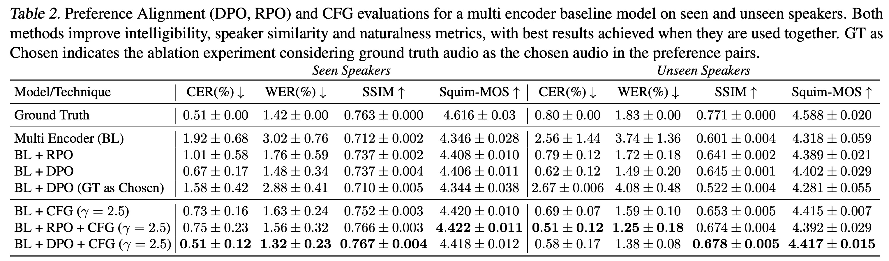
CFG and preference alignment are additive — each helps on its own, and CFG inference on a preference-aligned checkpoint gives the best results across metrics
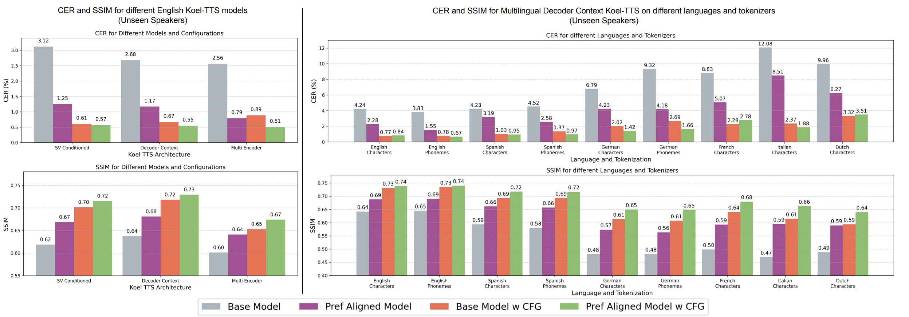
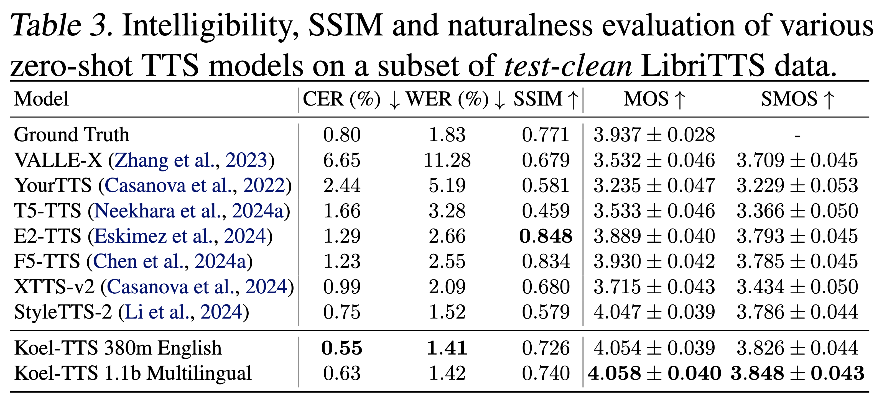
Snake activation instead of LeakyReLU
Different dilation rates in the encoder
Experiments with causality in the encoder and decoder by switching to causal convolutions
Replaces the complex MS-STFT discriminator with a multi-band MS-STFT discriminator
Adds a speaker consistency loss — maximize the cosine similarity between speaker embeddings of the real and reconstructed audio:
\mathcal{L}_{SC} = -\frac{\alpha}{N} \sum_{n=1}^{N} \cos\left(\phi(x_n),\; \phi(\hat{x}_n)\right) = -\frac{\alpha}{N} \sum_{n=1}^{N} \frac{\phi(x_n) \cdot \phi(\hat{x}_n)}{\lVert \phi(x_n) \rVert_2 \, \lVert \phi(\hat{x}_n) \rVert_2}
where \phi is a pretrained speaker verification encoder and \hat{x}_n = G(x_n)
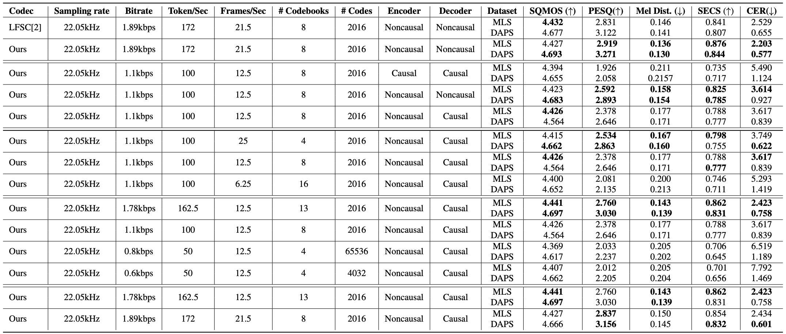
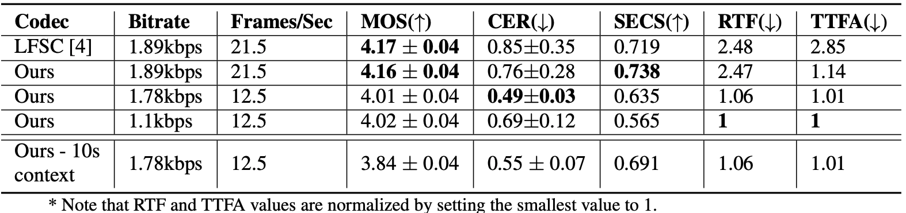